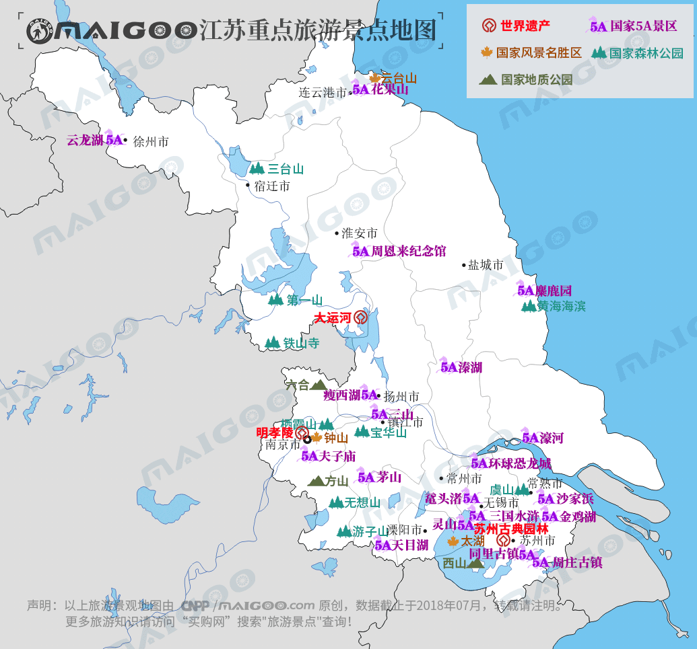

| | | | | |
| - | - | - | - | - |
|<b>别名</b>|苏||<b>著名景点</b>|中山陵、云龙湖、三台山、花果山、太湖、苏州园林、瘦西湖等|
|<b>行政区类别</b>|省||<b>机 场</b>|南京禄口国际机场、徐州观音国际机场、苏南硕放国际机场等|
|<b>所属地区</b>|中国华东||<b>火车站</b>|南京南站、徐州东站、苏州站、连云港站等|
|<b>下辖地区</b>|13个地级市、22个县级市、19个县、55个市辖区||<b>车牌代码</b>|苏A—苏N|
|<b>电话区号</b>|025、0510—0527||<b>GDP</b>|85900.9亿元（2017年）|
|<b>邮政区码</b>|210000至226000||<b>人均GDP</b>|107189（2017年）|
|<b>地理位置</b>|中国东部沿海，长江、淮河下游||<b>著名高校</b>|南京大学、东南大学等|
|<b>面 积</b>|103229.17平方千米||<b>历史名人</b>|刘邦、项羽、李煜、刘裕、孙权等|
|<b>人 口</b>|2298.47万（2014年）||<b>省树省花</b>|银杏树、茉莉花|
|<b>方 言</b>|江淮官话、吴语、中原官话||<b>党政领导</b>|省委书记：娄勤俭；省长：吴政隆|
|<b>气候条件</b>|亚热带季风气候—温带季风气候||-|-|
| <b>江苏生活文化</b> | <b>江苏特色文化</b> | <b>江苏曲艺文化</b> | <b>江苏建筑文化</b> | <b>江苏宗教文化</b> |
| - | - | - | - | - |
| <a href="javascript:;" onclick="live(this);">习俗/民俗</a> | - | <a href="javascript:;" onclick="art(this);">昆曲</a> | <a href="javascript:;" onclick="building(this);">南京总统府</a> | - |
| <a href="javascript:;" onclick="live(this);">方言文化</a> | - | <a href="javascript:;" onclick="art(this);">苏州评弹</a> | <a href="javascript:;" onclick="building(this);">夫子庙</a> | - |
| <a href="javascript:;" onclick="live(this);">节日文化</a> | - | <a href="javascript:;" onclick="art(this);">锡剧</a> | - | - |
| <a href="javascript:;" onclick="live(this);">嫁娶文化</a> | - | - |-|-|
| <a href="javascript:;" onclick="live(this);">饮食文化</a> | - | -|-|-|
| <a href="javascript:;" onclick="live(this);">江苏禁忌</a> | - |-| -|-|
## <i class="fa fa-file-text-o"></i>&nbsp;目录（Table of Contents）
+ [I. 总路线图（参考"广东"）](guangdong.html)
+ [II. 景点](#two)
+ [III. 路线规划（参考"广东"）](guangdong.html)
<h2 id="two"><i class="fa fa-star-o"></i>&nbsp;景点</h2>
